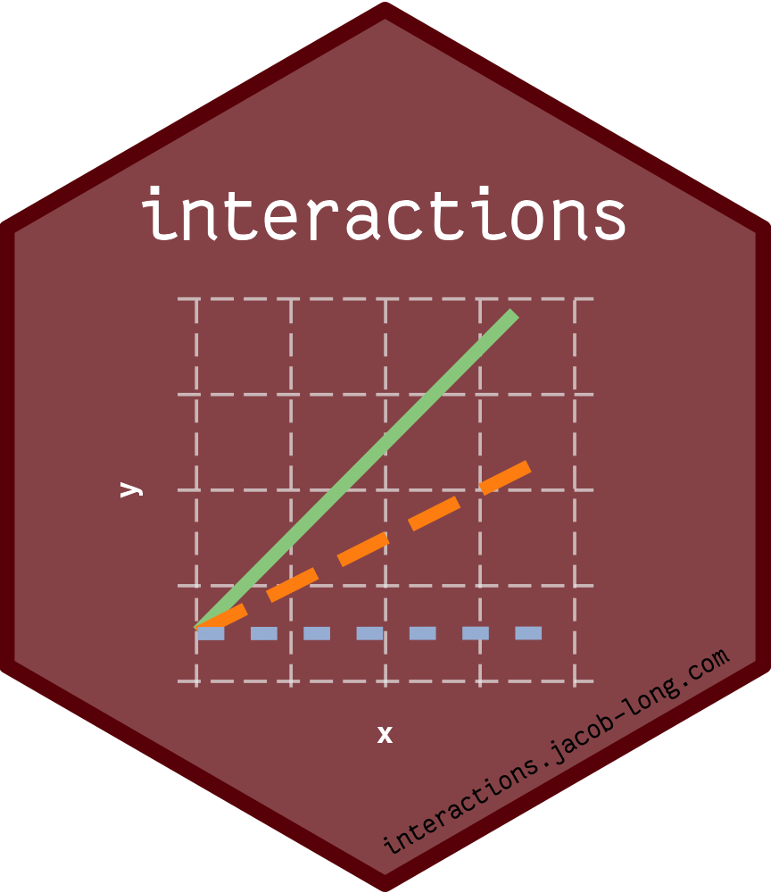
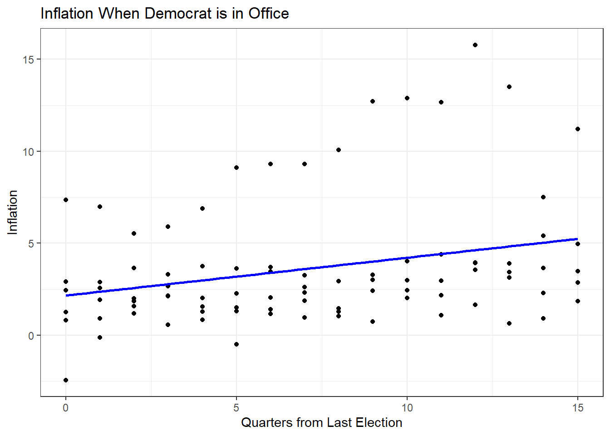
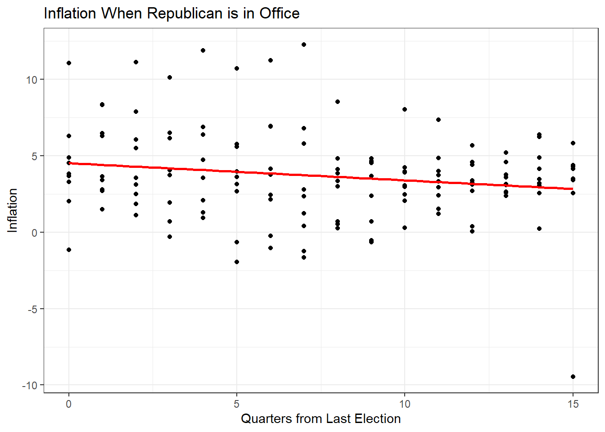
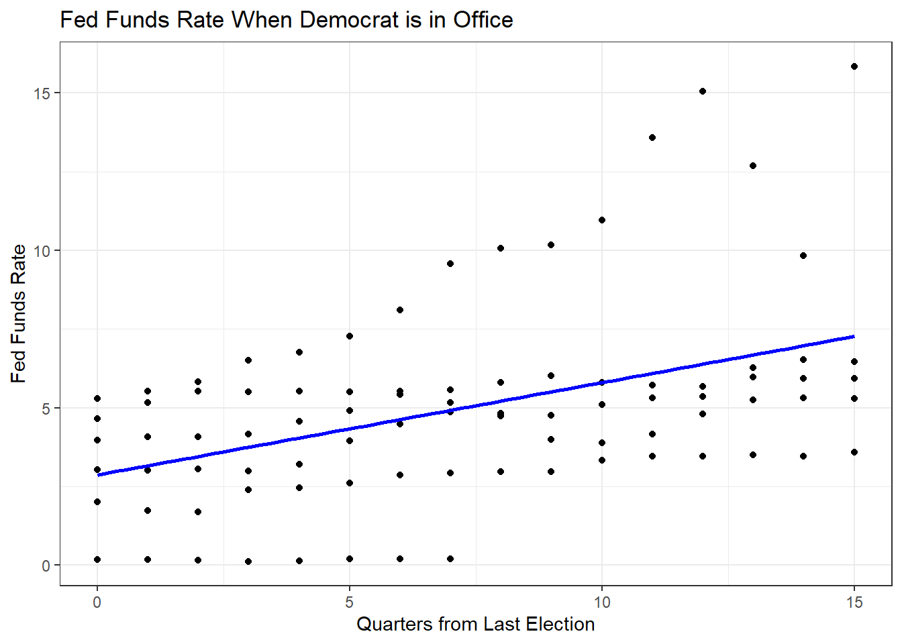
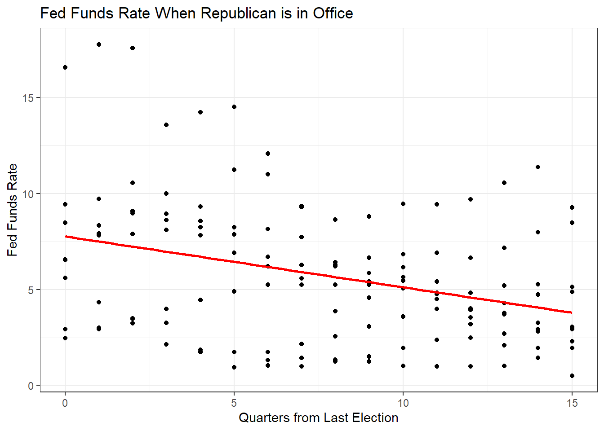
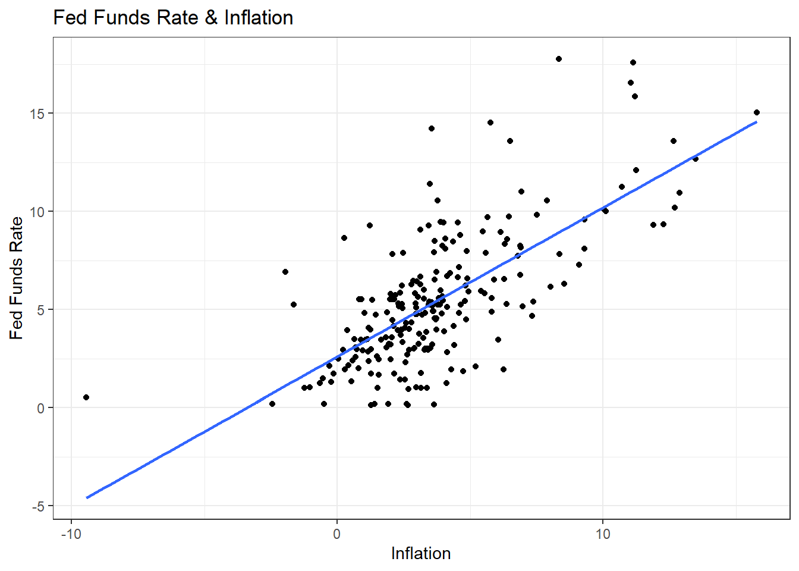
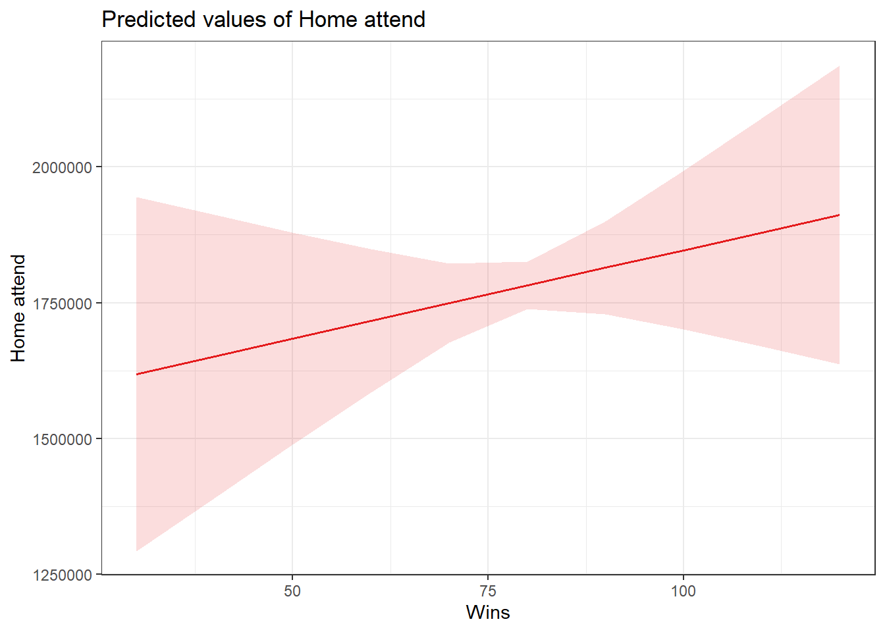
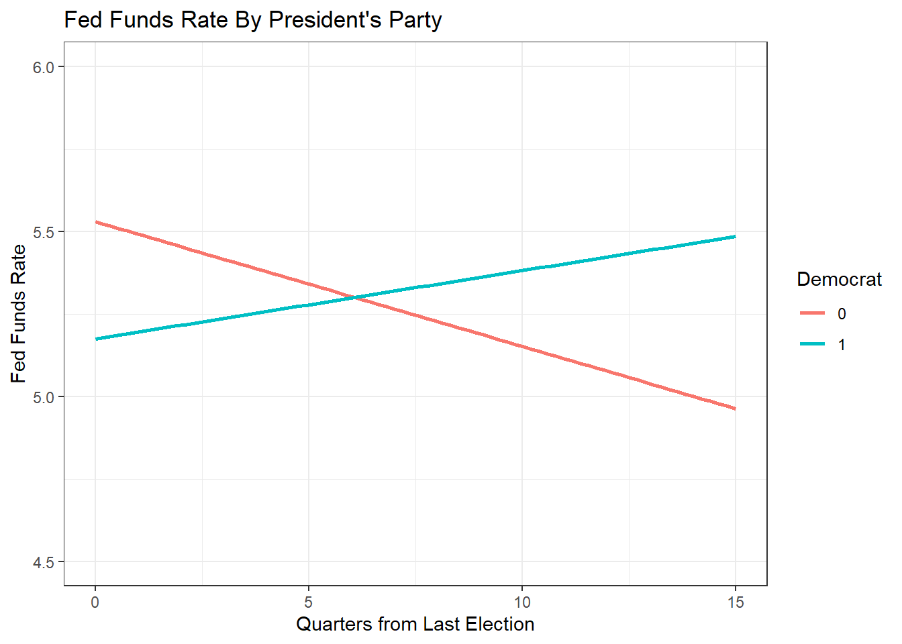

9 Lab VIII: Publication Ready Tables & Interactions (cont.)

9.1 Making Tables
## Loading Packages
library(stargazer)
## Loading Data - Change this to your working directory
load("~/GOVT5001/Lab VI/bbData.RData")
## Running Models
model1 <- lm(home_attend ~ wins, data = bbData)
model2 <- lm(home_attend ~ wins + runs_scored + runs_allowed, data=bbData)stargazer(model1, model2, type = "html")| Dependent variable: | ||
| home_attend | ||
| (1) | (2) | |
| wins | 27,345.180*** | 3,261.208 |
| (1,833.210) | (3,364.526) | |
| runs_scored | 4,260.215*** | |
| (489.056) | ||
| runs_allowed | -1,682.885*** | |
| (378.041) | ||
| Constant | -378,163.700*** | -270,323.800 |
| (146,400.900) | (237,057.800) | |
| Observations | 838 | 838 |
| R2 | 0.210 | 0.296 |
| Adjusted R2 | 0.209 | 0.293 |
| Residual Std. Error | 672,148.600 (df = 836) | 635,420.200 (df = 834) |
| F Statistic | 222.504*** (df = 1; 836) | 116.802*** (df = 3; 834) |
| Note: | p<0.1; p<0.05; p<0.01 | |
stargazer(model1, model2, covariate.labels = c("Wins", "Runs Scored", "Runs Allowed"),
dep.var.labels = "Home Attendance", header = FALSE,
title = "OLS Results", type = "html")| Dependent variable: | ||
| Home Attendance | ||
| (1) | (2) | |
| Wins | 27,345.180*** | 3,261.208 |
| (1,833.210) | (3,364.526) | |
| Runs Scored | 4,260.215*** | |
| (489.056) | ||
| Runs Allowed | -1,682.885*** | |
| (378.041) | ||
| Constant | -378,163.700*** | -270,323.800 |
| (146,400.900) | (237,057.800) | |
| Observations | 838 | 838 |
| R2 | 0.210 | 0.296 |
| Adjusted R2 | 0.209 | 0.293 |
| Residual Std. Error | 672,148.600 (df = 836) | 635,420.200 (df = 834) |
| F Statistic | 222.504*** (df = 1; 836) | 116.802*** (df = 3; 834) |
| Note: | p<0.1; p<0.05; p<0.01 | |
stargazer(model1, model2, covariate.labels = c("Wins", "Runs Scored", "Runs Allowed"),
dep.var.labels = "Home Attendance", header = FALSE,
title = "OLS Results", keep.stat = c("rsq", "adj.rsq", "n"),
column.labels = c("Model 1", "Model 2"), type = "html")| Dependent variable: | ||
| Home Attendance | ||
| Model 1 | Model 2 | |
| (1) | (2) | |
| Wins | 27,345.180*** | 3,261.208 |
| (1,833.210) | (3,364.526) | |
| Runs Scored | 4,260.215*** | |
| (489.056) | ||
| Runs Allowed | -1,682.885*** | |
| (378.041) | ||
| Constant | -378,163.700*** | -270,323.800 |
| (146,400.900) | (237,057.800) | |
| Observations | 838 | 838 |
| R2 | 0.210 | 0.296 |
| Adjusted R2 | 0.209 | 0.293 |
| Note: | p<0.1; p<0.05; p<0.01 | |
9.2 Interactions Practice Problems
These lab questions will test both your programming and interpretation skills! It covers most of the programming and regression related topics we have covered up until now. We will be exploring the relationship between politics and monetary policy in the US.
9.2.1 In your own words, what is an interaction term?
An interaction occurs when an independent variable has a different effect on the outcome depending on the values of another independent variable. We can think of this as a conditional effect.
9.2.2 What is the Federal Reserve Funds Rate?
The interest rate that banks charge each other to borrow or lend excess reserves overnight. It is “set” by the Federal Open Markets Committee. A higher Fed Funds Rate means more expensive borrowing costs. Banks can then pass on higher borrowing costs by raising the rates they charge for consumer loans.
9.2.3 What is the Federal Reserves’ Dual Mandate?
The dual mandate is usually discussed as keeping unemployment and inflation at normative rates. About 1-2% for inflation and 4-5% for unemployment.
9.2.4 Estimate a model with FEDFUNDS as the DV, Democrat and Quarters as the IVs, and include an interaction between Democrat and Quarters.
## Loading Data
load("~/GOVT8001/Lab 8/fed.RData")
model1 <- lm(FEDFUNDS~Democrat + Quarters + Democrat:Quarters, data=dta)
model1##
## Call:
## lm(formula = FEDFUNDS ~ Democrat + Quarters + Democrat:Quarters,
## data = dta)
##
## Coefficients:
## (Intercept) Democrat Quarters Democrat:Quarters
## 7.7703 -4.9032 -0.2649 0.55829.2.5 You can also create an “intereacted” variable and include it in the model. Re-estimate the model above with a new variable called dem_quarters that is the interaction term between quarters and Democrat.
dta$dem_quarters <- dta$Democrat*dta$Quarters
model2 <- lm(FEDFUNDS~ Democrat + Quarters + dem_quarters, data=dta)
model2##
## Call:
## lm(formula = FEDFUNDS ~ Democrat + Quarters + dem_quarters, data = dta)
##
## Coefficients:
## (Intercept) Democrat Quarters dem_quarters
## 7.7703 -4.9032 -0.2649 0.55829.2.6 What change in federal fund rates is associated with a one-unit increase in the quarters variable when the president is a Republican?
A one-unit increase in the election variable when the president is a Republican is associated with a fall in the Federal Funds rate of 0.26 percentage points. It is simply the coefficient on the quarters variable.
9.2.7 What change in federal fund rates is associated with a one-unit increase in the election variable when the president is a Democrat?
A one-unit increase in the election variable when the president is a Democrat is associated with an increase in the Federal Funds rate of -0.264 + 0.558 = 0.293 percentage points. The effect when a Democrat is president is the sum of the coefficients on the election variable and the interaction of the election variable and the dummy for Democratic presidents.
9.2.8 Create a Republican variable and estimate the same model as above, but for Republicans.
dta <- dta %>%
mutate(Republican = if_else(dta$Democrat == 0, 1, 0))
model2b <- lm(FEDFUNDS~Republican*Quarters, data=dta)
model2b##
## Call:
## lm(formula = FEDFUNDS ~ Republican * Quarters, data = dta)
##
## Coefficients:
## (Intercept) Republican Quarters Republican:Quarters
## 2.8671 4.9032 0.2933 -0.55829.2.9 Create two scatterplots, for years in which a Democrat was president and one for years in which a Republican was president, showing the relationship between inflation and the quarters since the previous election. Repeat this for the Fed Funds Rate.
## Plot for Democrats
dta %>%
filter(Democrat == 1) %>%
ggplot(aes(x = Quarters, y = inflation)) +
geom_point() +
geom_smooth(method = "lm", se = F, col = "blue") +
theme_bw() +
labs(title = "Inflation When Democrat is in Office",
x = "Quarters from Last Election",
y = "Inflation")
## Plot for Republicans
dta %>%
filter(Democrat == 0) %>%
ggplot(aes(x = Quarters, y = inflation)) +
geom_point() +
geom_smooth(method = "lm", se = F, col = "red") +
theme_bw() +
labs(title = "Inflation When Republican is in Office",
x = "Quarters from Last Election",
y = "Inflation")
## Plot for Democrats
dta %>%
filter(Democrat == 1) %>%
ggplot(aes(x = Quarters, y = FEDFUNDS)) +
geom_point() +
geom_smooth(method = "lm", se = F, col = "blue") +
theme_bw() +
labs(title = "Fed Funds Rate When Democrat is in Office",
x = "Quarters from Last Election",
y = "Fed Funds Rate")
## Plot for Republicans
dta %>%
filter(Democrat == 0) %>%
ggplot(aes(x = Quarters, y = FEDFUNDS)) +
geom_point() +
geom_smooth(method = "lm", se = F, col = "red") +
theme_bw() +
labs(title = "Fed Funds Rate When Republican is in Office",
x = "Quarters from Last Election",
y = "Fed Funds Rate")
9.2.10 How responsive is the Fed to rising inflation? Present a scatterplot with a regression line and calculate the correlation coefficient and estimate a simple regression model.
## Plot
dta %>%
ggplot(aes(x = inflation, y = FEDFUNDS)) +
geom_point() +
geom_smooth(method = "lm", se = F) +
theme_bw() +
labs(title = "Fed Funds Rate & Inflation",
x = "Inflation",
y = "Fed Funds Rate")
## Correlation Coefficient
cor(dta$inflation, dta$FEDFUNDS, use="complete.obs")## [1] 0.6951576## Regression Model
summary(lm(FEDFUNDS ~ inflation, data = dta))##
## Call:
## lm(formula = FEDFUNDS ~ inflation, data = dta)
##
## Residuals:
## Min 1Q Median 3Q Max
## -5.3947 -1.4348 -0.2644 1.0830 8.9465
##
## Coefficients:
## Estimate Std. Error t value Pr(>|t|)
## (Intercept) 2.58411 0.25541 10.12 <0.0000000000000002 ***
## inflation 0.75964 0.05249 14.47 <0.0000000000000002 ***
## ---
## Signif. codes: 0 '***' 0.001 '**' 0.01 '*' 0.05 '.' 0.1 ' ' 1
##
## Residual standard error: 2.453 on 224 degrees of freedom
## (6 observations deleted due to missingness)
## Multiple R-squared: 0.4832, Adjusted R-squared: 0.4809
## F-statistic: 209.5 on 1 and 224 DF, p-value: < 0.000000000000000229.2.11 Let’s find the average inflation rate for each presidential administration in our dataset. Start by creating a new categorical variable with the name of each president. Hint 1: run dta$president to see how the dataset codes presidents. Hint 2: Look up case_when().
## With dplyr
dta <- dta %>%
mutate(admin = case_when(
president == 1 ~ "Obama",
president == 2 | president == 3 ~ "Eisenhower",
president == 4 ~ "H.W.",
president == 5 | president == 6 ~ "Bush",
president == 7 ~ "Carter",
president == 8 ~ "Kennedy-Johnson",
president == 9 ~ "Johnson",
president == 10 ~ "Nixon-Ford",
president == 11 ~ "Nixon",
president == 12 | president == 13 ~ "Reagan",
president == 14 | president == 15 ~ "Clinton")
)
## With Base R
dta$admin2 <- NA
dta$admin2[dta$president==1] <- "Obama"
dta$admin2[dta$president==2 | dta$president==3] <- "Eisenhower"
dta$admin2[dta$president==4] <- "H.W."
dta$admin2[dta$president==5 | dta$president==6] <- "Bush"
dta$admin2[dta$president==7] <- "Carter"
dta$admin2[dta$president==8] <- "Kennedy-Johnson"
dta$admin2[dta$president==9] <- "Johnson"
dta$admin2[dta$president==10] <- "Nixon-Ford"
dta$admin2[dta$president==11] <- "Nixon"
dta$admin2[dta$president==12 | dta$president==13] <- "Reagan"
dta$admin2[dta$president==14 | dta$president==15] <- "Clinton"9.2.12 Now find the average inflation rate for each administration.
## WIth dplyr
dta %>%
group_by(admin) %>%
summarise(avg_inflation = mean(inflation))## # A tibble: 11 × 2
## admin avg_inflation
## <chr> <dbl>
## 1 Bush 2.57
## 2 Carter 9.79
## 3 Clinton 2.56
## 4 Eisenhower 1.37
## 5 H.W. 4.18
## 6 Johnson 3.20
## 7 Kennedy-Johnson 1.16
## 8 Nixon 4.50
## 9 Nixon-Ford 8.00
## 10 Obama 1.32
## 11 Reagan 4.29## With Base R
tapply(dta$inflation, dta$admin, mean)## Bush Carter Clinton Eisenhower H.W. Johnson Kennedy-Johnson
## 2.573187 9.792505 2.563147 1.371580 4.176468 3.201017 1.161032
## Nixon Nixon-Ford Obama Reagan
## 4.495170 7.996118 1.324935 4.2894269.2.13 Problem IV
With any time left, we will go over last week’s questions!
9.3 Appendix: Additional Materials
## Running Model
model2 <- lm(home_attend ~ wins + runs_scored + runs_allowed, data=bbData)
## Packages for Partial Effects Plot
library(ggeffects)
library(sjPlot)
library(ggplot2)
## Function for Partial Effects
plot_model(model2, type = "pred", terms = "wins") +
theme_bw()
## Loading Federal Reserve Data
load("~/GOVT8001/Lab 8/fed.RData")
## Plotting Interactions
dta %>%
ggplot(aes(x = Quarters, y = FEDFUNDS, color = as.character(Democrat), group= Democrat)) +
geom_smooth(method = "lm", se = F) +
theme_bw() +
ylim(4.5, 6) +
labs(title = "Fed Funds Rate By President's Party",
x = "Quarters from Last Election",
y = "Fed Funds Rate", color = "Democrat")